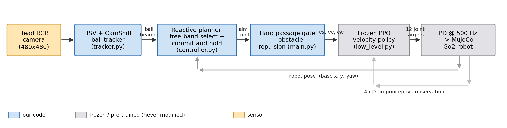
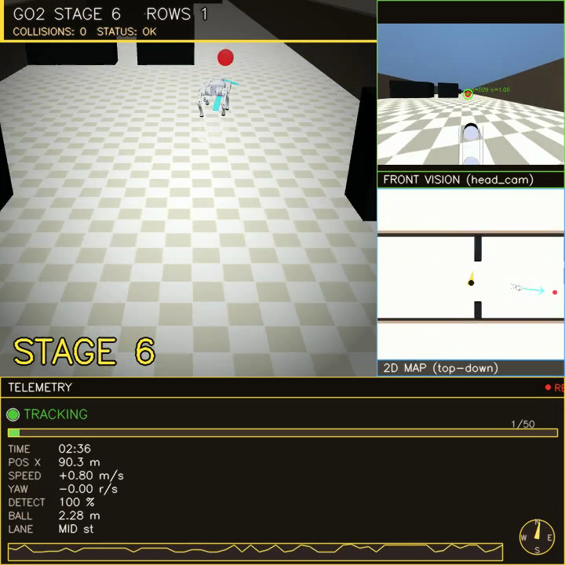
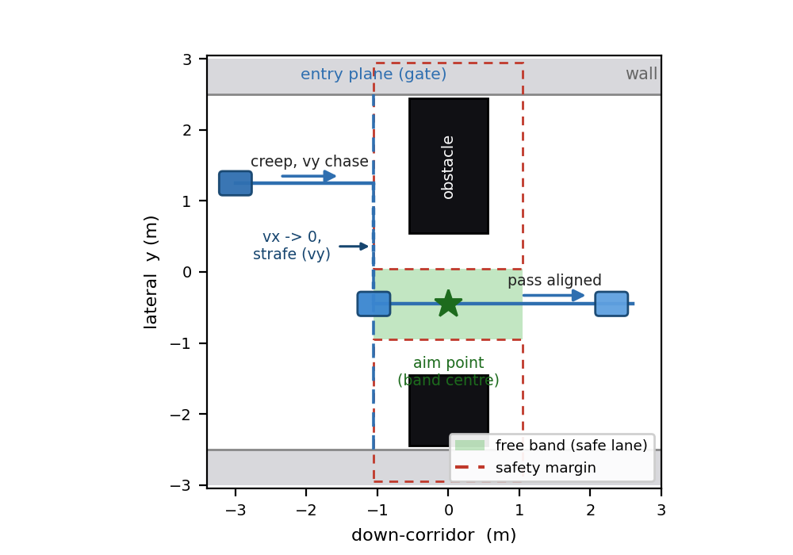
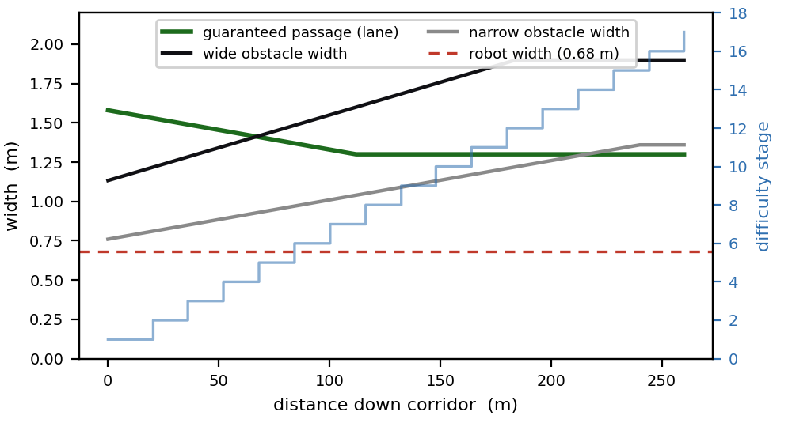
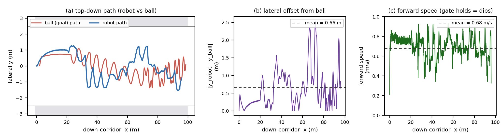
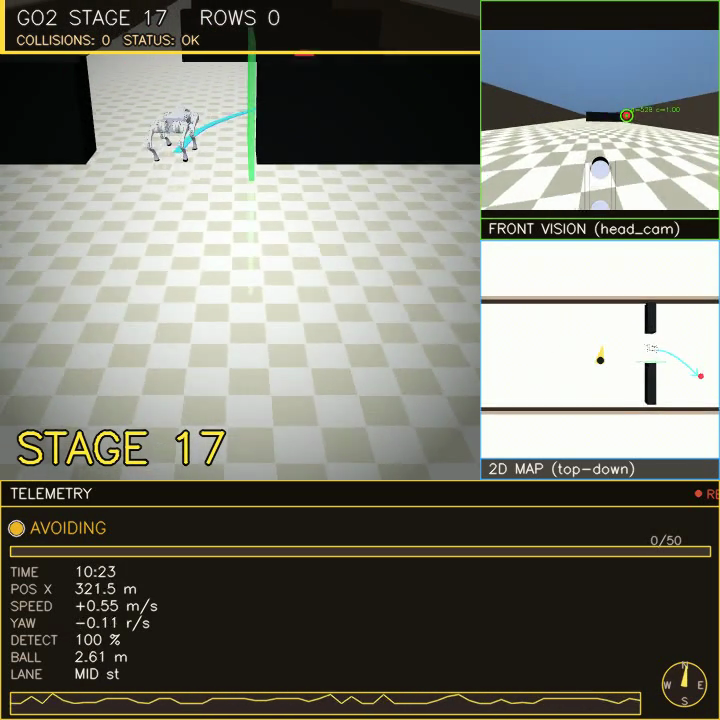

Abstract. A simulated Unitree Go2 quadruped follows a moving red ball down a long, cluttered corridor using only its head camera. There is no GPS, no lidar, no depth sensor, and no map. We did not train the robot to walk: the gait comes from a frozen, pre-trained reinforcement-learning velocity policy whose weights we never touch. Around it we built a colour-based ball tracker, a reactive gap-picking planner, and the corridor itself. The main idea is small. The walking policy accepts a sideways velocity command, but a controller that only walks toward a target leaves that command at zero, so the robot behaves like a car that can only change lanes by turning. We switch the sideways channel back on and add one rule: the robot may not enter an obstacle row until its body is already lined up with the gap. With these two changes, and a corridor that always leaves one passable lane, the robot runs for ten minutes (600 s) on nine random layouts with zero obstacle or wall collisions, at about 0.65 m/s. In a logged run it sat on average 0.66 m to the side of the ball, sometimes the full width of the corridor, so it is clearly avoiding on its own rather than trailing a cleared path. We let the ball pass straight through the obstacles so the robot has to do all of the avoiding.
Most robots that move through cluttered spaces lean on rich sensing (lidar, depth cameras, or motion capture) with a mapping and planning stack on top. We set ourselves a tighter rule and asked one question. How far can a four-legged robot get through a dense obstacle corridor if all it has is a single RGB camera on its head and a walking controller it did not train?
The robot chases a moving red ball, which stands in for a goal to walk toward. The corridor is five metres wide and packed with rows of obstacles, and the gaps get tighter the further the robot travels. The walking itself comes from a frozen, pre-trained reinforcement-learning (RL) policy from the RSL-RL framework [1]; we never change its weights. The ball tracking is plain colour vision. Everything in between, the planner, the safety rules, the corridor generator, and the dashboard, is ours.
What is new here. The policy of Rudin et al. [1] is omnidirectional: its
command is a forward speed, a sideways speed, and a turn rate
(vx, vy, vω). A controller that
just walks toward the ball only sets the forward speed and the turn rate, which
leaves the robot non-holonomic, like a car: to shift sideways it must turn, walk,
and turn back. Our contribution is the observation that driving the unused sideways
channel, together with a rule that refuses to enter a gap before the body is
aligned, is what lets an untrained walker thread a tight corridor with no collisions
at all. We did not find this combination, reusing a spare command channel of a
frozen policy purely for reactive single-camera avoidance, in the work we read.
Section 5 reports a robustness check that probes how much each layer contributes.
Learned legged locomotion. RL has produced strong quadruped controllers in simulation and on real hardware [2], including blind walking over rough terrain [3] and schemes that learn velocity-command policies in minutes [1]. We treat one such policy as a black box that maps a velocity command to joint motion, and never retrain it.
Reactive navigation. We build no map. The planner looks at the next row of obstacles, picks a gap, and steers toward it with a pure-pursuit law [4]. This is closer to follow-the-gap and potential-field methods than to global planning, which fits a robot with little sensing that has to react fast.
Tracking the ball. The ball is found with an HSV colour mask and followed with CamShift [5], a light histogram tracker we chose over a neural detector to keep the pipeline simple and easy to inspect. The simulator is MuJoCo [6] and the Go2 model is from the MuJoCo Menagerie.
The system is three layers wrapped around the frozen walking policy (Fig. 1). The camera feeds a tracker, the tracker feeds a planner, the planner and a hard gate shape a velocity command, and the frozen policy turns that command into a gait. Only the robot's base pose and proprioception flow back.
tracker.py) finds the red ball with an HSV mask
and follows it with CamShift, resetting when its confidence drops.controller.py, main.py) picks
a gap through the next row, commits to it, and turns it into a body-frame velocity
command including the sideways slide. Pure pursuit follows the path; a hard gate and
a push-away term are the safety net.low_level.py) is the frozen policy. It reads a
45-number observation plus the velocity command and outputs 12 joint targets at
50 Hz, which a PD loop tracks at 500 Hz.
vx, vy, vω),
and only the robot's pose and a 45-D proprioceptive observation feed back.
A separate part of the code builds the corridor. It lays out the obstacle rows, ramps difficulty with distance, and recycles rows the robot has passed back to the front so the course never ends.
Red wraps around the hue circle, so we use two HSV ranges and clean the mask with morphology. The largest sensible blob gives a starting box and a hue histogram, and CamShift tracks that box frame to frame. Short occlusions are fine because the tracker coasts; a long loss triggers a fresh detection. In simulation we also know the ball's true position, so the controller keeps chasing during the moments it is hidden behind an obstacle.
For the next row, the planner grows each obstacle by a safety margin (about the robot's half-width plus a little slack), removes those blocked strips, and keeps the widest gap it can reach. It aims at the centre of that gap, never an edge, and stays committed until the robot is past the row. Commitment matters: without it the ball can pull the robot back into an obstacle it just cleared.
The part that does the heavy lifting is the gate (Fig. 3). While the robot is not yet inside the chosen band, it may not drive past the front of the row. Its forward speed drops to zero at that line while a strong sideways command slides it to the band centre. Only when it is aligned does it move through. Because the gate forces alignment before entry, the robot stays safe wherever the ball leads it.

vx to zero and strafes (vy) to the
band centre, then passes through aligned. It never crosses the gate while
misaligned.We rotate the high-level command into the robot's own frame and feed the sideways
part into the policy's vy input. Our first version left that
input at zero. Switching it on lets the robot step sideways into a wall-side gap
instead of doing the slow turn-walk-turn dance. A push-away term also nudges the body
sideways whenever it gets close to an obstacle edge, as a backup. We cap forward
speed during sharp turns, because the frozen policy gets shaky in that corner of its
command range, and if the robot does trip it stands up where it fell rather than
restarting the run.
Every row is built to leave at least one lane wide enough for the robot. This matters because two wide obstacles can otherwise split the corridor into slivers that nothing could pass, and the planner would simply get stuck. Difficulty grows with distance, not time (Fig. 4): obstacles widen, the guaranteed lane narrows toward a floor of 1.30 m, and the colour darkens, across 17 stages that climb and then hold. The lane floor stays comfortably above the robot's 0.68 m width, so every row is passable but later ones leave little room. Passed rows recycle to the front, so the corridor is effectively endless. The ball follows its own gentle sine path and walks straight through the obstacles, so the robot can never just trail a cleared route.

The control loop runs at 50 Hz and the physics at 500 Hz, so the policy reads one observation and emits one command every 20 ms while the PD loop and the contacts update ten times in between. After we trimmed the scene to the obstacles actually in use, the simulator steps at about 5,700 Hz on a laptop, several times faster than real time, which is what made the ten-minute sweeps cheap to run. A single OpenCV window draws the whole dashboard of Fig. 2, so we can watch the planner's gap choices, the head camera, and the telemetry as the robot runs.
We ran headless on nine fixed random seeds for 600 s (ten minutes) each, counting any contact between the robot and an obstacle or wall as a failure. Across all nine the robot was collision-free for the full ten minutes while the difficulty climbed to stage 17 and held. Table 1 summarises the run, and Fig. 5 shows one logged trajectory in detail.
| Metric | Result |
|---|---|
| Collision-free runtime | 10 min (600 s), 0 collisions, 9 random seeds |
| Obstacle rows cleared | every row, endlessly (recycled corridor) |
| Difficulty reached | stage 1 up to 17, then held |
| Mean forward speed | 0.68 m/s (logged 150 s run, Fig. 5c) |
| Mean lateral offset from ball | 0.66 m (max 2.53 m ≈ corridor width) |
| Physics step rate | about 5,700 Hz |
Fig. 5a shows the robot taking a clearly different route from the ball. The ball weaves on its own sine path and ploughs through obstacles; the robot detours around them. The lateral offset between the two (Fig. 5b) averages 0.66 m and spikes to the full half-width of the corridor, which is a simple check that the robot is doing its own avoidance and not riding the ball's wake. Forward speed (Fig. 5c) sits near 0.68 m/s and dips to near zero exactly when the gate is holding the robot to align it before a tight row.

Robustness check. To see how much the result leans on any single layer, we re-ran at maximum difficulty (every lane at the 1.30 m floor) with parts of the stack switched off, three seeds for 200 s each. The robot stayed collision-free with the lateral and gate channel removed, and stayed collision-free even with the reactive brakes removed on top of that. We read this as defense in depth: the guaranteed passable lane and the gap-steering planner already give a safe baseline, so no single layer is a single point of failure. What the lateral and gate channel adds is precision rather than basic avoidance. With it on, the robot slows and centres itself in each gap, the alignment hold seen as the speed dips in Fig. 5c, instead of cutting the corner, and that extra margin is what the tightest wall-side gaps rely on over the full ten-minute runs.

Two failure modes shaped the design. First, the original controller drove only forward speed and yaw, so on a row whose only gap sat against a wall the robot could not line up and clipped the obstacle. That is what pushed us to drive the sideways channel and add the gate. Second, once the sideways channel was on, commanding a hard strafe and a hard turn at the same time built up enough sideways roll to tip the robot over. We fixed that by shrinking the sideways command during sharp turns and capping forward speed in that part of the policy's command range. Both fixes show up in the code as the lateral clip and the turn-rate guard in Section 4.3.
The walking policy is frozen and not fine-tuned for this task. It tracks sideways moves with about 0.25 m of error and trips occasionally during the hardest cross-corridor moves; we reduced both but did not remove them. The robot always got back up, and no trip became a collision in the runs we report. Vision is colour-based, so a change in lighting or ball colour would break it where a trained detector would not. Our evaluation is a nine-seed sweep, not an exhaustive one. The clear next steps are to fine-tune the policy for tighter sideways tracking, replace the colour tracker with a learned detector, and look one or two rows ahead so the approach to each gap is set up earlier.
A four-legged robot can cross a dense, endless obstacle corridor with no collisions for ten minutes using only a head camera and a walking policy it never trained. The two changes that made it work were small: drive the sideways velocity command the policy already had, and refuse to enter a gap before lining up with it. A robustness check shows the system leans on no single layer and degrades gracefully. The wider lesson is that getting more out of a general pre-trained policy can stand in for a lot of custom control and extra sensors.